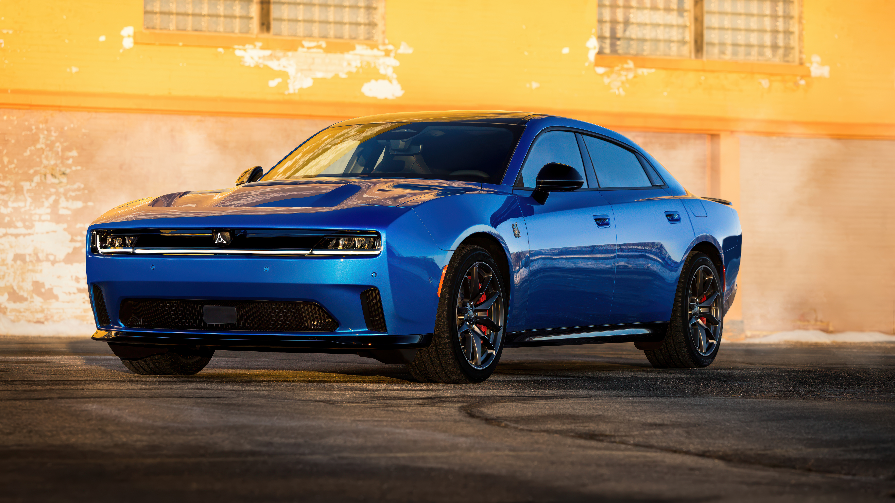
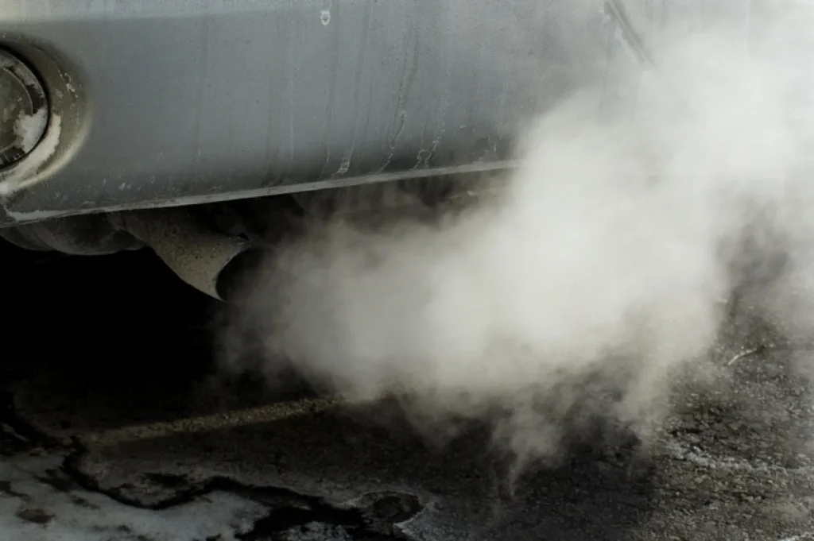

ماشین بنزینی چیست؟
AIماشین بنزینی خودرویی است که برای حرکت کردن از بنزین بهعنوان سوخت استفاده میکند. این ماشین با کمک موتوری به نام موتور احتراق داخلی انرژی بنزین را به انرژی حرکتی تبدیل میکند.
ماشین بنزینی چگونه کار میکند؟
1. ورود هوا و بنزین: هوا و بنزین وارد موتور میشوند.2. فشردهسازی: مخلوط هوا و بنزین توسط پیستون فشرده میشود.
3. احتراق: شمع جرقه میزند و مخلوط بنزین و هوا میسوزد.
4. حرکت پیستون: انرژی حاصل از سوختن، پیستون را حرکت میدهد و باعث چرخش موتور میشود.
5. حرکت ماشین: نیروی موتور از طریق جعبهدنده به چرخها منتقل میشود و ماشین حرکت میکند.
اجزای اصلی ماشین بنزینی:
موتور: تولیدکننده نیروی حرکت.باک بنزین: محل نگهداری سوخت.
شمع: ایجاد جرقه برای روشن شدن مخلوط سوخت و هوا.
پیستون: قطعهای که درون سیلندر حرکت میکند.
گیربکس: تنظیم و انتقال نیروی موتور به چرخها.
رادیاتور: خنک کردن موتور.
Gasoline-powered car

مزایای ماشین بنزینی✅
سوختگیری نسبتاً سریعدسترسی آسان به بنزین
تعمیر و نگهداری نسبتاً ساده
تنوع زیاد خودروها
معایب ماشین بنزینی❌
تولید آلودگی هوامصرف سوخت
تولید گازهای گلخانهای
وابستگی به سوختهای فسیلی
